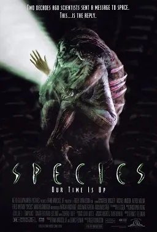

The genetics
The film is built around the creation of a hybrid. Scientists follow genetic instructions received from space and splice alien DNA with human DNA, hoping for a docile, controllable organism; instead they obtain Sil, a being with superhuman strength, rapid growth and regeneration, driven by an instinct to reproduce. Genetics thus becomes the route by which an alien species could invade Earth from within. The scientists are government researchers who act recklessly and then try to destroy what they made: Fitch, the project leader, is portrayed as cold and responsible for the danger, while the molecular biologist Laura Baker helps hunt Sil down. The film draws on the fear of an uncontrolled creation breeding with humans. Its starting point is real: SETI exists, and screenwriter Dennis Feldman, who considered messages such as the Arecibo transmission unwise, researched the script with SETI scientists and with Human Genome Project researchers at the Salk Institute. The human–alien hybrid itself is pure fiction.
How genetics is portrayed
- Overall portrayal of genetics
- negative A Frankenstein horror in which reckless government scientists follow alien genetic instructions and unleash a predator that threatens humanity, ending on an ominous mutated rat.
- Outcome of the genetic intervention
- negative The hybrid escapes, kills many people, mates and gives birth to a monstrous offspring before being destroyed, and a rat mutated by her tissue suggests the threat continues.
- Dr. Xavier Fitch
- villain Aim: curiosity (neutral). He leads the government team that splices the transmitted alien DNA into human DNA hoping for a 'docile and controllable' hybrid, then tries to gas her; critics call him a cold, updated Dr. Frankenstein, and Sil kills him.
- Dr. Laura Baker
- hero Aim: benevolent (positive). The molecular biologist on the hunting team analyses Sil to help stop her and, in one account, repeats the experiment with pure alien DNA to show the message was a deception; she is professional and survives.
- The alien senders of the transmission
- villain Aim: power (negative). An unseen alien species whose DNA and splicing instructions the film suggests are a colonisation ruse or biological weapon against humanity; affiliation 'other' as an alien civilisation.
The story
Scientists working with the SETI programme receive radio transmissions from an alien source containing a DNA sequence and instructions for combining it with human DNA. Assuming the senders are friendly, a government team led by Xavier Fitch creates a female human–alien hybrid, Sil, who looks like a normal girl but grows at an extraordinary rate. When the scientists decide to kill her with cyanide gas, she escapes from the laboratory. Fearing that she will mate with human men and produce offspring that could wipe out humanity, the government assembles a team: anthropologist Stephen Arden, molecular biologist Laura Baker, the empath Dan Smithson and the mercenary Press Lennox. Sil, now an adult woman, travels to Los Angeles looking for a mate, killing anyone who stands in her way. She eventually conceives a child with Arden, kills him and Fitch, and gives birth in the sewers, where Press and Smithson destroy both her and her offspring.